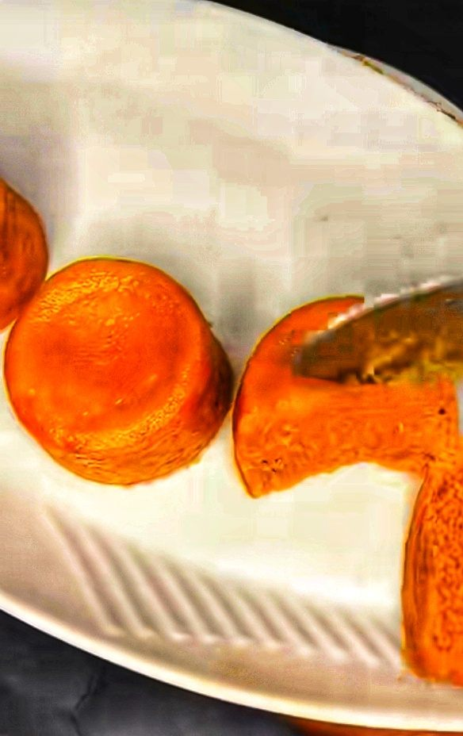

COMFORTING STEW · ABOUT 45 MIN
Egusi & leafy greens
Ground melon seeds lend this richly textured soup its distinctive, nutty character.
View recipeNigerian food, made for everyday life
Discover the dishes, ingredients, and traditions we love—with practical ideas for bringing more balance to the table.
Find your next recipeBig flavor. Flexible, thoughtful cooking.
A little more than a recipe
Nigerian cooking is generous, resourceful, and full of regional character. Start with a dish you know—or meet one for the first time—and make it your own.
Explore food & cultureA good place to start
COMFORTING STEW · ABOUT 45 MIN
Ground melon seeds lend this richly textured soup its distinctive, nutty character.
View recipe
BEAN-BASED · ABOUT 60 MIN
A savory steamed bean pudding that makes a satisfying side or a meal of its own.
View recipeCook with curiosity
Learn about sharing food, making room for regional differences, and finding a balanced plate without losing the flavors you love.